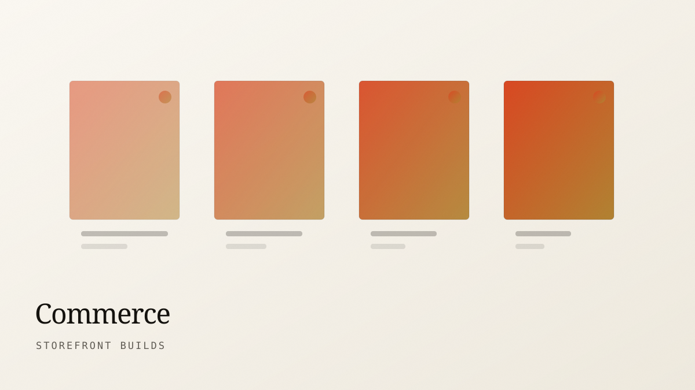

Proyecto completo
De descubrimiento a lanzamiento, alcance y precio fijos. Ocho semanas típicas, doce para comercio y proyectos multiidioma. Pago en tres etapas atadas a aprobaciones, nunca al tiempo invertido.
Web Designer Puerto Rico
000
Ya sea un sitio de cinco páginas o una tienda con volumen serio, aplican las mismas reglas: construido desde cero, presupuestado para la velocidad, accesible por defecto, y tuyo para quedártelo.
Los proyectos arrancan en ocho semanas
Alcance fijo, precio fijo, pagos por etapas. Tendrás el número completo antes de empezar — no trabajamos por hora.
Despliega cualquier servicio para ver el detalle
Sitios web personalizados para empresas en San Juan y compañías del Caribe que necesitan competir en línea.
Tu sitio web es tu vendedor 24/7 en San Juan y en toda Puerto Rico. Construimos sitios web personalizados diseñados alrededor de tu negocio, no plantillas con tu logo pegado encima. Desde bufetes en San Juan hasta tiendas en el Caribe, creamos sitios que convierten visitantes en clientes. Rápidos, claros, accesibles—sin plugins, sin constructores visuales, sin compromisos.
Incluye
HTML, CSS y JavaScript escritos a mano. Rápido por construcción, no por plugin.
Marcado semántico, una hoja de estilos guiada por componentes y justo el JavaScript necesario para hacer el trabajo. Presupuestamos el rendimiento igual que el diseño: cada kilobyte tiene que ganarse su lugar. El resultado carga rápido en un teléfono de gama media con datos móviles, que es donde realmente vive la mayoría de tu tráfico.
Incluye
Temas a la medida y patrones de bloques que tu equipo puede editar sin romper el diseño.
Construimos WordPress como fue pensado: un tema a la medida, bloques hechos a propósito y una experiencia de edición que guía a tu equipo en vez de entregarle mil ajustes. Sin el peso de los constructores de páginas, sin cadenas de treinta plugins, sin pavor cuando llega una actualización del núcleo.
Incluye
Tiendas Shopify y WooCommerce diseñadas alrededor del checkout, no de la portada.
La mayoría de las tiendas pierde dinero entre la página de producto y la pantalla de pago. Diseñamos ese tramo primero — selección de variantes, claridad de envío, señales de confianza, checkout como invitado — y luego construimos el resto de la tienda para alimentarlo. La analítica y el seguimiento de eventos se conectan desde el día uno para que veas exactamente dónde están las fugas.
Incluye
Investigación, flujos, wireframes y sistemas de interfaz para productos que deben usarse, no solo visitarse.
Para apps, dashboards y cualquier cosa con inicio de sesión. Mapeamos las tareas para las que tus usuarios contratan el producto, prototipamos temprano las partes riesgosas y probamos antes de que llegue la factura de ingeniería. Recibes una biblioteca de componentes documentada contra la cual tus desarrolladores pueden construir sin adivinar.
Incluye
Una reconstrucción que conserva el posicionamiento, el valor del contenido y lo que ya estaba funcionando.
Los rediseños fallan cuando se descarta lo que ya rendía. Auditamos analítica, desempeño de búsqueda y mapas de calor antes de tocar el diseño, así sabemos qué páginas proteger. El mapa de redirecciones, la migración de metadatos y un lanzamiento por etapas hacen que el tráfico se venga contigo.
Incluye
Trabajo de Core Web Vitals sobre sitios que ya tienes — medido antes, medido después.
Perfilamos el sitio real en hardware real, no una puntuación de laboratorio con fibra óptica. Recursos que bloquean el render, imágenes sobredimensionadas, desplazamiento de diseño, scripts de terceros que nadie recuerda haber añadido. Recibes una lista priorizada con el costo y la ganancia esperada de cada arreglo, y luego hacemos el trabajo.
Incluye
La mayoría empieza con un proyecto y pasa a un plan de mantenimiento después. Los sprints son para equipos que necesitan resolver un problema específico rápido.
De descubrimiento a lanzamiento, alcance y precio fijos. Ocho semanas típicas, doce para comercio y proyectos multiidioma. Pago en tres etapas atadas a aprobaciones, nunca al tiempo invertido.
Dos semanas sobre un solo problema: un checkout que gotea, una landing que tiene que salir, una falla de Core Web Vitals, un sistema de diseño para que tus desarrolladores construyan encima. Precio plano, alcance definido en una llamada.
Retainer mensual para sitios que construimos: actualizaciones, respaldos, monitoreo de disponibilidad y seguridad, un bloque fijo de cambios, y una revisión trimestral de rendimiento con recomendaciones reales.

Velocidad, específicamente
Fijamos un presupuesto de peso de página durante el diseño y medimos cada decisión contra él. Las fuentes se subdividen, las imágenes se dimensionan y cargan de forma diferida, el JavaScript se escribe en vez de instalarse, y la capa de animación se perfila en hardware real.
Cuando tomamos un proyecto de optimización sobre un sitio que no construimos, recibes una lista priorizada con el costo estimado y la ganancia esperada de cada arreglo, para que decidas qué vale la pena antes de empezar.

Comercio, específicamente
El tramo entre una página de producto y un pago completado es donde las tiendas pierden más dinero y reciben menos atención de diseño. Empezamos ahí — selección de variantes, claridad de entrega, checkout como invitado, el momento exacto en que aparece el costo de envío — y luego construimos el catálogo para alimentarlo.
El seguimiento de eventos entra desde el primer commit, así que a las dos semanas del lanzamiento puedes ver exactamente en qué paso abandona la gente.
Un sitio de marketing a la medida de ocho a doce páginas normalmente cae en cinco cifras medias; los proyectos de comercio y multiidioma van más arriba. Cotizamos precio fijo después de una llamada de alcance y un brief escrito, así que el número que apruebas es el que pagas. Si tu presupuesto está por debajo del rango, dilo en tu consulta — te diremos con honestidad si podemos ayudarte o te recomendaremos a alguien que pueda.
Ocho semanas es lo típico para un proyecto completo a la medida, del arranque al lanzamiento. Los proyectos de comercio y los sitios que necesitan varios idiomas toman de diez a doce. La variable más grande es qué tan rápido regresan el contenido y los comentarios de tu lado, y por eso el calendario nombra tus fechas con la misma claridad que las nuestras.
Tú provees la materia prima y el conocimiento del tema. Nosotros lo estructuramos, lo editamos para la web y escribimos el texto de enlace donde falte. Si necesitas redacción completa, traemos a una escritora con quien llevamos años trabajando e incluimos el costo en la cotización desde el inicio.
Sí, y diseñamos para eso. Los proyectos con CMS incluyen bloques hechos a propósito que no se pueden acomodar en algo roto, más un manual escrito y una grabación del recorrido para tu equipo. La mayoría de los clientes edita con confianza en un día.
La mayor parte de nuestro trabajo es remoto, a través de Estados Unidos continental, el Caribe y Europa. Mantenemos dos horas de solapamiento con tu jornada y corremos reuniones programadas en vez de llamadas improvisadas, lo cual suele convenir mejor a equipos distribuidos de todos modos.
Treinta días de monitoreo y arreglos vienen incluidos con cada proyecto. Después de eso puedes llevar el sitio completamente en casa — todo es tuyo — o pasar a un plan de mantenimiento con actualizaciones, seguridad y una revisión trimestral de cómo está rindiendo el sitio de verdad.